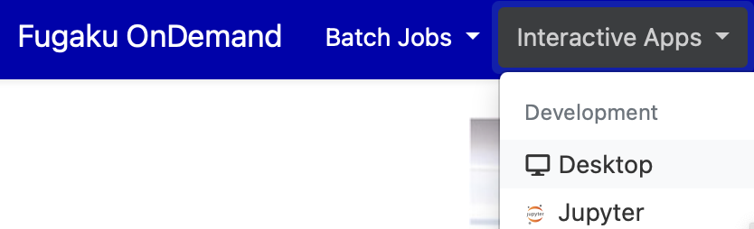
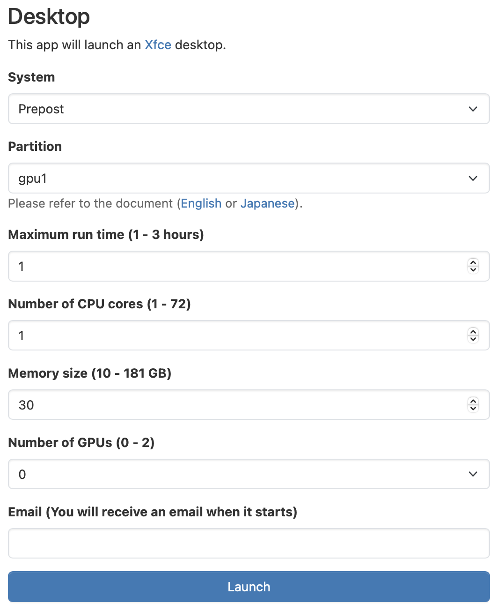
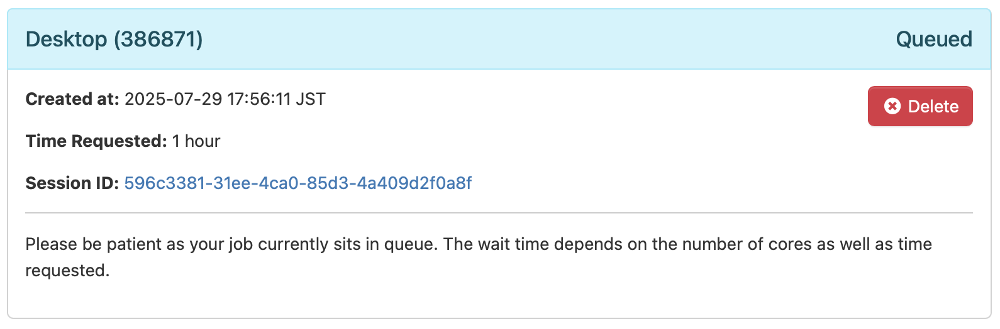
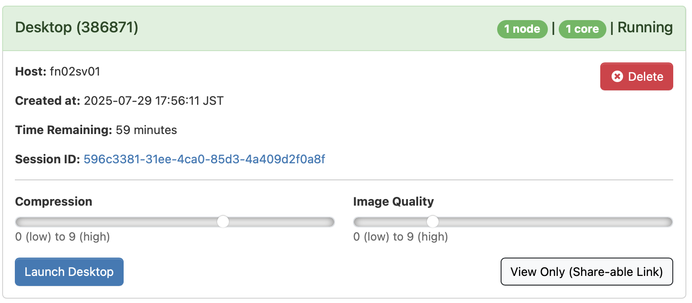
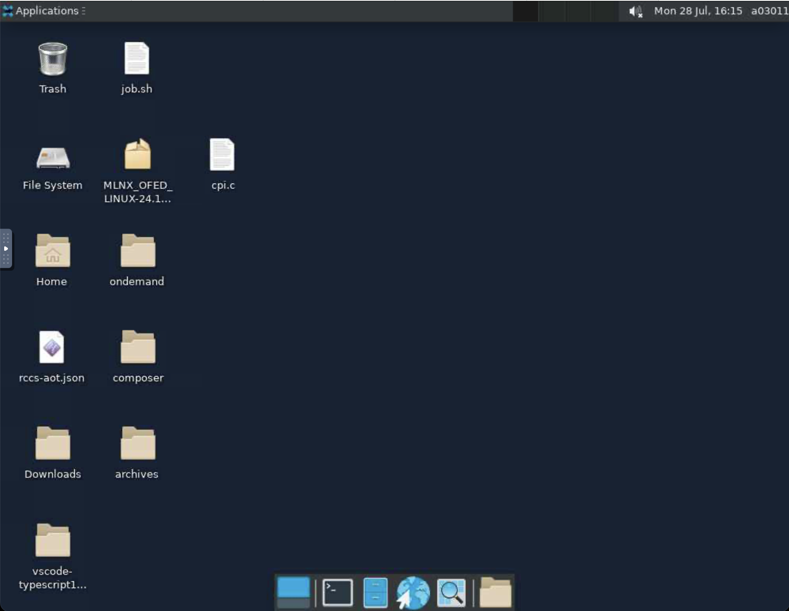
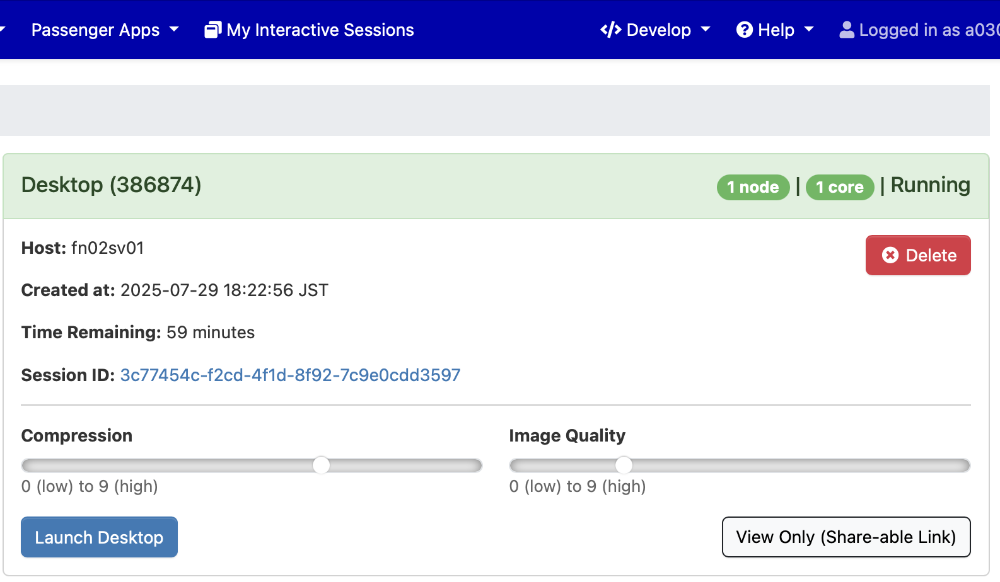

3. Interactive Applications
Interactive applications are programs that run on compute nodes in the Fugaku or Prepost environment, allowing users to interactively operate and control the computation. The following interactive applications are available:
| Category | Application |
|---|---|
| Development | Remote Desktop, JupyterLab, MATLAB, VSCode, RStudio, Terminal (ttyd) |
| Profiler | NVIDIA Visual Profiler, NVIDIA Nsight Compute, NVIDIA Nsight Systems, Vampir |
| Viewer | AVS/Express, C-Tools, GaussView, Gnuplot, GrADS, ImageJ, MOLDEN, OpenMX viewer, OVITO, Paraview, PyMOL, SALMON view, Smokeview, VESTA, VMD, VisIt, XCrySDen |
| Workflow | WHEEL |
As an example, here is how to use Remote Desktop. From the menu bar, select "Interactive Apps" → "Desktop".
A web form will appear for specifying computing resources. Input fields vary depending on the application, but for visualization applications, setting the number of GPUs to 1 or more enables VirtualGL automatically, which can improve performance. After filling out the form, click "Submit" to submit the job to Fugaku.
Immediately after submission, a screen labeled "Queued" will appear, indicating that the job is waiting to be executed.
Once the job starts on the compute node, the label changes to "Running" and a "Launch Desktop" button appears. Adjust the "Compression" and "Image Quality" to suitable levels and click the "Launch Desktop" button.
The remote desktop will launch in the web browser. To end the session, click the "Delete" button or go to "Applications" → "Log Out" in the upper-left corner of the remote desktop. Simply closing the browser tab will not terminate the session.
Clicking "View Only (Share-able Link)" button opens a mirrored version of the remote desktop in a new tab. The mirrored screen is view-only and not interactive. By sharing this tab’s URL via email, screen sharing is possible (only among users with Fugaku accounts).
Clicking "My Interactive Sessions" from the menu bar shows a list of active interactive sessions. You can also terminate sessions from this screen.
